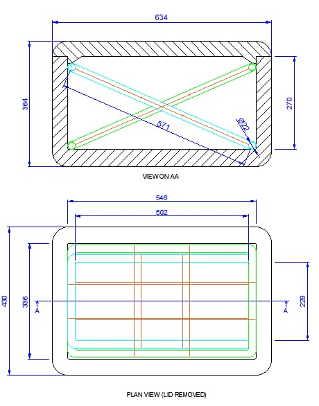

A step-by-step guide to building a shock-absorbing artifact transport
container with an integrated monitoring system.
What you'll build
01
The Suspension System
A cross-over grid of cut-to-length PVC pipes and elastic bands or paracord,
mounted inside the outer container, that suspends the inner container in mid-air to absorb shock.
02
The Inner Container
A snug two-piece cardboard or polymer box, cushioned with sponge padding,
silica gel packets, and humidity indicator strips, sized to the artifact with proper packing allowances.
03
The Monitoring System
A Micro:bit V2, Bluetooth link, web app, and Firebase database that
track shock, temperature and location in real time and alert you before damage happens.
Three build stages:
suspension, inner container and monitoring.
Materials NeededGather everything below before you start.
20–25 mm PVC pipes
Cooler box, or any other large, airtight container, to use as the outer container
~1/2 m² non-acidic 4-ply corrugated cardboard
Elastic bands or paracord
Sponges (4–8, depending on artifact size)
Silica gel packets (5–15)
Humidity indicator strips
Micro:bit V2
AA Batteries for Microbit
Fire-resistant tape (for the Micro:bit)
Measuring tape
Pipe cutter or hacksaw
Knife
Ruler
Tape
Build Stage 01 · Part 1
The Suspension System

Suspension System Reference Blueprint
Our own cross-over pipe layout. Every pipe length is labelled in millimetres.
Your own container will need its own measurements — see Step 3.
1Measure Your Outer Container
Determine the internal dimensions of your outer container: length (L), width (W), and depth (D).
Measure from inside wall to inside wall.
Decide where the pipes will sit. They can rest on the rim (if the container has a lip) or on
brackets mounted inside. For a typical suspension, pipes are placed across the top opening, but they can also be
positioned lower using supports.
Consider the height at which you want the inner container to hang. The elastic bands will
attach from the pipes to the inner container, so the pipes need to sit above the inner container's attachment points.
2Plan the Pipe Layout
The reference blueprint uses a cross-over formation, shown with red and green lines. This means two
sets of pipes intersecting, like a grid or an X pattern. You can choose any pattern that provides multiple attachment
points for the elastic bands. Common layouts include:
Parallel grid: several pipes running lengthwise and several crosswise, forming a lattice.
Diagonal cross: two or more pipes placed diagonally across the container, crossing at the centre.
Radial: pipes radiating out from the centre.
For a simple and effective suspension, use two sets of parallel pipes, one set along the length and one
along the width, so they intersect and form a grid. The number of pipes depends on the size of your container
and the load; for example, you might use 3 pipes lengthwise and 3 crosswise.
3Calculate Pipe Lengths
For each pipe, measure the distance between the points where it will rest. If a pipe rests on the rim, its length
equals the internal dimension (L or W) plus any overhang if it sits on ledges. For diagonal pipes, use the
Pythagorean theorem: diagonal = √(L² + W²). Make sure each pipe is
long enough to span the gap, with a little extra if it needs to sit on supports.
From the reference blueprint
That build uses seven pipe lengths: 634, 270, 871, 546, 502, 436, and 228 mm,
each cut for a different pipe in that particular design. For your own container, calculate your own numbers
using the method above. They will differ from these.
4Cut the PVC Pipes
Mark each pipe at its calculated length using a marker.
Cut squarely using a PVC pipe cutter or hacksaw. A pipe cutter gives a cleaner cut.
After cutting, deburr the ends with sandpaper or a deburring tool to remove sharp edges that
could damage elastic bands or scratch the container.
5Arrange the Pipes Inside the Container
Place the cut pipes inside the container according to your planned layout. They should rest securely on the
rim or supports. If the container has a smooth rim, add adhesive felt pads to prevent slipping.
Make sure the pipes are level and spaced evenly. For a grid layout, lay the first set (e.g. lengthwise) and
then the second set (crosswise) on top of them to create an intersection. The pipes can simply rest on each other;
they don't need to be fastened unless the load will shift them.
6Attach Elastic Bands to Suspend the Inner Container
Attach one end of each band to a pipe. Loop the band around the pipe and tie it, or use a
hook if the band has one. Make sure the band is secure and won't slip.
Attach the other end to the inner container. Repeat for all bands, distributing them evenly
around the container. The number of bands you need depends on the weight; more bands provide more support.
Adjust the tension so the inner container is suspended without touching the bottom or sides
of the outer container. You may need to adjust band lengths or positions to get this right.
Weight rating
Standard elastic bands suit lighter artifacts. For heavier pieces, swap in paracord: our tests showed a
paracord suspension safely supports artifacts up to 7 pounds (3 kg).
Build Stage 02 · Part 2
The Inner Container
1Measure the Cardboard or Polymer Pieces
Obtain the dimensions of the objects. Photographs that include measurements can help, but
seeing and examining the objects in person is important.
Add packing allowances. Add a minimum of two inches on all sides, including the
top and bottom, between the object and the box to allow space for packing material.
When packing multiple objects in one box, leave space between objects for packing material.
Objects made of similar material can be grouped together if properly spaced.
Creating a list of objects grouped by size and material type can help you estimate box sizes.
2Choose or Construct the Box
Option A
Choose standard boxes if using standard cardboard boxes or (if you have the money) polyethylene/polypropylene containers. Select sizes that closely match the dimensions calculated in
Step 1. It's better to choose a box that's slightly too large than one that's too small.
Option B
Or construct a custom two-piece box, consisting of a bottom and a
separate lid:
Use a knife and a metal ruler to cut corrugated cardboard or plastic.
Place the ruler along the cutting line as a guide. Score the base first, then cut through all layers.
Construct the bottom before the lid to ensure a snug fit.
Score (without cutting) the material along the fold lines.
Tape the corners with normal tape, or preferably reinforced strapping tape.
Make a pattern or template before cutting to ensure accuracy.
3Make the Lid
Place the bottom of the box on a sheet of cardboard or plastic and trace its outline.
Add two inches on each side to form the lip of the lid.
Score along the fold lines to shape the lip.
Tape the corners with tape or reinforced strapping tape.
4Add Sponge Cushioning, Silica Gel, and Humidity Indicators
Cut the sponges into smaller pieces until they almost fill the inner container.
Depending on the humidity of the surrounding environment, add between 5 and 15 silica gel packets
and mix them in with the sponge pieces so they're scattered throughout the inner container.
Tuck one or two humidity indicator strips in where you can see them without opening the box, so you can
check moisture levels at a glance.
Place the artifact in the centre of the inner container, so sponge cushioning surrounds it on all sides.
Result
The artifact sits centred in the box, cushioned by sponge on every side, with silica packets and a humidity
indicator strip tracking moisture levels throughout transit.
Use a Micro:bit V2 with a battery pack or USB power supply.
Wrap the Micro:bit in fire-resistant tape for extra protection, then place it
inside the artifact container, ideally mounted on the artifact or a cushioned platform, so it
measures actual shock on the object rather than just the container.
If you want to track environmental conditions, make sure your Micro:bit has access to its light, temperature,
and accelerometer sensors (the Micro:bit V2 has all of these built in).
2Set Up the Micro:bit Code
Use MakeCode or the uploaded Micro:bit scripts.
Make sure your code reads from:
Accelerometer (X, Y, Z axes)
Temperature sensor
Light sensor (optional)
Add code to send data via Bluetooth using these UUIDs in your web app:
Bluetooth service & characteristic UUIDs
Accelerometer service
e95d0753-251d-470a-a062-fa1922dfa9a8
Accelerometer data
e95dca4b-251d-470a-a062-fa1922dfa9a8
Temperature service
e95d6100-251d-470a-a062-fa1922dfa9a8
Temperature data
e95d9250-251d-470a-a062-fa1922dfa9a8
Make sure the Micro:bit code starts notifications for these characteristics, so it pushes data
to your browser app continuously.
3Set Up the Web App
Host the app. Use GitHub Pages or any other website-hosting service to host both the
index.html and curator.html files found in the repository.
Use the main page to:
Enter a Trip ID (e.g. Box_1)
Enter an Artifact name (e.g. Ming Vase)
Click Start Monitoring to connect to your Micro:bit via Bluetooth
Open curator.html in a browser. It reads data directly from the Firebase database
you set up in Step 4.
From the dashboard you can:
View all trips uploaded to Firebase
Select a trip to see a map of its route
View charts of shock and temperature over time
Adjust the safety limit, which updates the live monitoring system
6Test Your Setup
Run the Micro:bit and web app while gently moving the container to see the impact values update.
Check that alerts appear if you exceed the G-force threshold.
Confirm the trip appears in the curator dashboard and that all telemetry is logged correctly.
Adjust the elastic bands or padding as needed to reduce shock to the artifact.
You're done
Once alerts fire correctly and telemetry logs cleanly to the curator dashboard, the ArchiVault container is ready
to protect and monitor an artifact in transit.